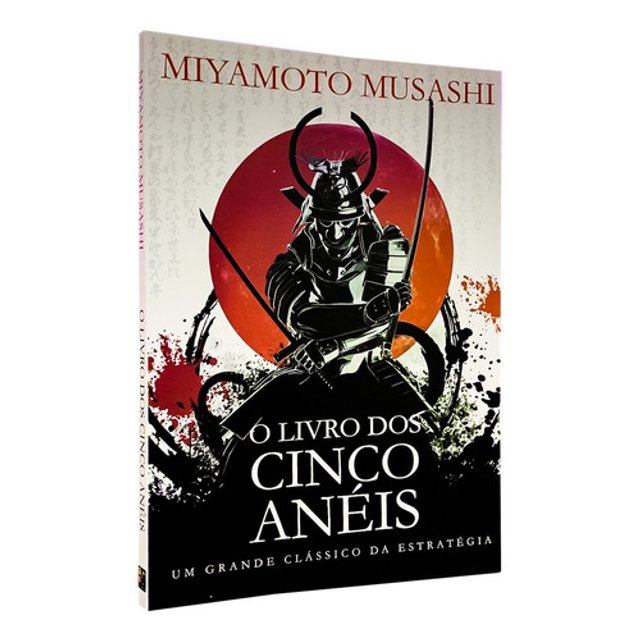

O Bushido é um código de ética e conduta tradicionalmente associado aos samurais, a classe guerreira do Japão feudal.
O termo "Bushido" pode ser traduzido como "o caminho do guerreiro" ou "o caminho do samurai".
Ele define as normas e valores pelos quais os samurais deveriam viver e agir e desempenhou um papel significativo na cultura japonesa durante séculos.
Princípios do Bushido
Lealdade
(忠義, Chūgi): Os samurais eram esperados para serem leais ao seu senhor feudal (daimyō) até a morte. A lealdade era considerada uma das virtudes mais importantes, e traição era vista como um dos piores crimes.
Honra
(誉, Homare ou 武士道, Bushidō): Manter a honra era de extrema importância para um samurai. A honra era conquistada por meio de atos de bravura no campo de batalha e pela observância rigorosa do código.
Coragem
(勇気, Yūki): Os samurais eram treinados para enfrentar a morte sem medo e para agir corajosamente, independentemente das circunstâncias.
Justiça
(義, Gi): Os samurais eram incentivados a agir com justiça e a proteger os fracos. Eles deveriam ser exemplos de virtude na sociedade.
Benevolência
(仁, Jin): Os samurais eram encorajados a serem compassivos e a ajudar os necessitados. Isso equilibrava sua natureza guerreira com uma atitude mais humana.
Respeito
(礼, Rei): Os samurais demonstravam respeito pelos outros, especialmente pelos mais velhos e pelos que estavam acima deles na hierarquia social.
Sinceridade
(誠, Makoto): Os samurais eram incentivados a serem honestos e sinceros em suas palavras e ações.
Autocontrole
(自制, Jisei): Os samurais deveriam exercer autocontrole sobre suas emoções, especialmente a raiva, para manter a calma e a clareza de julgamento em situações difíceis.
Dever
(義務, Gimu): Cumprir seus deveres e obrigações era essencial para os samurais. Eles tinham uma série de responsabilidades para com seu senhor, sua família e sua comunidade.
Simplicidade
(質実剛健, Shitsujitsu Gōken): Os samurais viviam uma vida simples, sem extravagâncias, para manter o foco em seus princípios e deveres.
O Bushido e Miyamoto Musashi
O Bushido e a vida de Miyamoto Musashi compartilham uma conexão na medida em que ambos estão profundamente enraizados na cultura e história japonesas, com foco na conduta, ética e virtude dos samurais e espadachins.
O Bushido, como mencionado anteriormente, é um código de ética que orientou a vida dos samurais no Japão feudal. Ele destacava a importância de princípios como a lealdade, a honra, a coragem, a justiça e outros valores que os samurais deveriam seguir em sua vida e em batalha.
Miyamoto Musashi, por outro lado, personifica muitos desses princípios em sua própria vida e carreira. Ele era um espadachim lendário conhecido por sua coragem e habilidades excepcionais em combate, e ele também era um filósofo e estrategista que escreveu sobre a mentalidade e a ética do guerreiro em seu livro "O Livro dos Cinco Anéis". Musashi acreditava na importância da busca constante pela excelência, da honestidade, da autodisciplina e de outras virtudes que ecoam os princípios do Bushido.
Ambos o Bushido e a vida de Miyamoto Musashi continuam a ser estudados e respeitados não apenas no Japão, mas em todo o mundo, como exemplos de uma ética de guerreiro que enfatiza valores nobres e uma abordagem disciplinada para a vida e o combate. Eles desempenharam um papel significativo na formação da cultura japonesa e ainda têm relevância nos dias de hoje, inspirando pessoas a buscarem a excelência e a viverem com integridade.
Miyamoto Musashi
Miyamoto Musashi (宮本 武蔵) foi um lendário espadachim, samurai e estrategista japonês do período Edo (c. 1584 - 1645). Ele é amplamente considerado um dos maiores espadachins da história japonesa e é conhecido por seu estilo de luta único e pela criação do Niten Ichi-ryu, um estilo de esgrima que enfatiza o uso simultâneo de duas espadas, conhecido como "Nito-ryu".
Duelos lendários: Musashi é famoso por seus muitos duelos e vitórias notáveis em combate. Um de seus duelos mais famosos foi contra Sasaki Kojiro, um renomado espadachim, em 1612, na Ilha de Ganryu. Musashi derrotou Kojiro com uma espada de madeira improvisada, conhecida como "bokken", em um confronto que durou apenas alguns minutos.
Filosofia e estratégia: Além de suas habilidades excepcionais de combate, Musashi era um filósofo e estrategista. Ele escreveu um tratado chamado "O Livro dos Cinco Anéis" (Gorin no Sho), que é uma obra clássica sobre estratégia, táticas de combate e a mentalidade do guerreiro. Este livro é amplamente lido e estudado até os dias de hoje, não apenas por aqueles interessados em artes marciais, mas também por líderes e estrategistas em várias áreas.
Vida errante: Musashi levou uma vida errante e se envolveu em numerosos duelos ao longo de sua vida. Ele acreditava em testar suas habilidades em combate e desenvolver constantemente sua técnica. Durante suas viagens, ele ganhou uma vasta experiência em combate, o que influenciou sua filosofia de vida e suas ideias sobre a arte da guerra.
Arte e caligrafia: Além de suas habilidades marciais e estratégicas, Musashi também era um artista talentoso e um calígrafo habilidoso. Seus escritos e obras de arte são valorizados como parte de seu legado cultural.
Morte e legado: Musashi morreu em 1645 e, após sua morte, sua obra "O Livro dos Cinco Anéis" foi publicada. Seu legado persiste como um ícone do samurai ideal e uma figura inspiradora para aqueles que buscam aprimorar suas habilidades e conhecimentos em artes marciais, estratégia e filosofia.
O Livro dos Cinco Aneis
"O Livro dos Cinco Anéis" (Gorin no Sho) é uma obra clássica escrita. Publicado pela primeira vez em 1645, pouco antes da morte de Musashi, o livro é um tratado sobre estratégia, táticas de combate e a mentalidade do guerreiro.
É uma das obras mais influentes e amplamente lidas sobre artes marciais e estratégia em todo o mundo.

Os Cinco Anéis: O livro é dividido em cinco partes, ou "anéis", cada um representando um elemento da estratégia e da técnica de combate de Musashi. Os anéis são Terra, Água, Fogo, Vento e Vazio. Cada um deles representa um aspecto diferente da abordagem estratégica em combate.
Espada: Musashi coloca grande ênfase na espada como a extensão do próprio corpo do espadachim. Ele descreve em detalhes suas técnicas de esgrima e a importância do domínio da espada em combate.
Estratégia: Musashi discute estratégias de combate, incluindo a importância de manter a iniciativa, controlar o ritmo da batalha e antecipar os movimentos do oponente. Ele enfatiza a flexibilidade e a adaptação às circunstâncias.
Mentalidade do Guerreiro: O livro aborda a mentalidade do guerreiro e como a coragem, a determinação e a calma são fundamentais em situações de combate. Musashi também fala sobre a importância da autodisciplina e da autocontrole.
Métodos de Treinamento: Musashi fornece conselhos sobre como treinar e aprimorar as habilidades de combate, incluindo a prática constante, a observação dos erros e a incorporação das lições aprendidas.
Filosofia e Ética: Além de estratégia e técnicas de combate, o livro contém reflexões filosóficas e éticas. Musashi enfatiza a busca da verdade, a honestidade e a integridade como componentes essenciais da vida de um guerreiro.
Adaptação Universal: Musashi acredita que as lições aprendidas em seu livro podem ser aplicadas universalmente, não apenas em combate, mas em qualquer aspecto da vida. Ele argumenta que os princípios da estratégia podem ser úteis em todas as situações.
Legado: "O Livro dos Cinco Anéis" é um dos textos mais respeitados nas artes marciais e é estudado não apenas por espadachins, mas também por estrategistas, líderes empresariais e indivíduos em busca de aprimoramento pessoal.
Miyamoto Musashi continua sendo uma figura lendária na cultura japonesa e sua obra, "O Livro dos Cinco Anéis", é uma leitura essencial para aqueles interessados em artes marciais, estratégia e filosofia, proporcionando insights valiosos sobre como enfrentar desafios, alcançar o sucesso e manter uma mentalidade disciplinada e ética.
Aplicação no Gerenciamento de Projetos
Embora o Bushido seja um código de ética e conduta tradicionalmente associado aos samurais no Japão feudal e o gerenciamento de projetos seja uma disciplina moderna relacionada à organização e execução eficaz de tarefas e metas, existem algumas semelhanças e lições que podem ser aplicadas do Bushido ao gerenciamento de projetos. Aqui estão algumas delas:
Lealdade e compromisso com a equipe: Assim como os samurais eram leais aos seus senhores, os gerentes de projetos devem ser leais à sua equipe e à organização. A lealdade e o compromisso com o sucesso do projeto são fundamentais para manter a coesão da equipe.
Honestidade e integridade: O Bushido enfatiza a honestidade e a integridade, que também são princípios essenciais no gerenciamento de projetos. A transparência e a honestidade nas comunicações são cruciais para construir confiança com a equipe e os stakeholders.
Planejamento e estratégia: Assim como os samurais desenvolviam estratégias para o campo de batalha, os gerentes de projetos precisam planejar e desenvolver estratégias para atingir os objetivos do projeto. Isso envolve a definição de metas, a identificação de recursos necessários e a criação de planos de ação.
Coragem e enfrentamento de desafios: O Bushido valoriza a coragem diante da adversidade. No gerenciamento de projetos, os líderes precisam demonstrar coragem ao enfrentar desafios, tomar decisões difíceis e lidar com a incerteza.
Justiça e equidade: O Bushido promove a justiça e a proteção dos fracos. Da mesma forma, os gerentes de projetos devem garantir que os recursos e as oportunidades sejam distribuídos de maneira justa e que todos os membros da equipe sejam tratados com igualdade e respeito.
Resiliência e adaptação: Os samurais eram treinados para se adaptarem às circunstâncias em constante mudança no campo de batalha. No gerenciamento de projetos, a resiliência e a capacidade de adaptação são importantes para lidar com imprevistos e mudanças no ambiente do projeto.
Autocontrole e gerenciamento de emoções: Assim como os samurais eram incentivados a exercer autocontrole sobre suas emoções, os gerentes de projetos precisam manter a calma sob pressão e gerenciar suas emoções para tomar decisões racionais.
Compromisso com a excelência: Os samurais buscavam constantemente a excelência em suas habilidades. Os gerentes de projetos devem buscar a excelência na execução de seus projetos, visando atingir os melhores resultados possíveis.
Embora as semelhanças entre o Bushido e o gerenciamento de projetos possam parecer conceituais, as lições de ética, liderança e estratégia do Bushido podem ser aplicadas de forma prática no contexto do gerenciamento de projetos para promover o sucesso e a eficácia das equipes e das iniciativas.